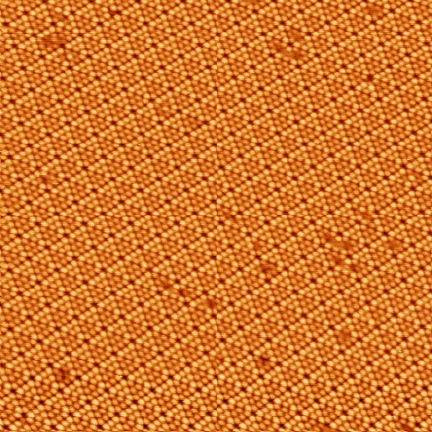
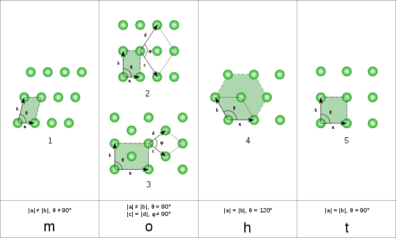
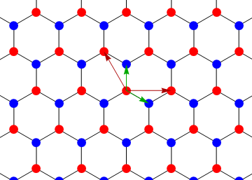
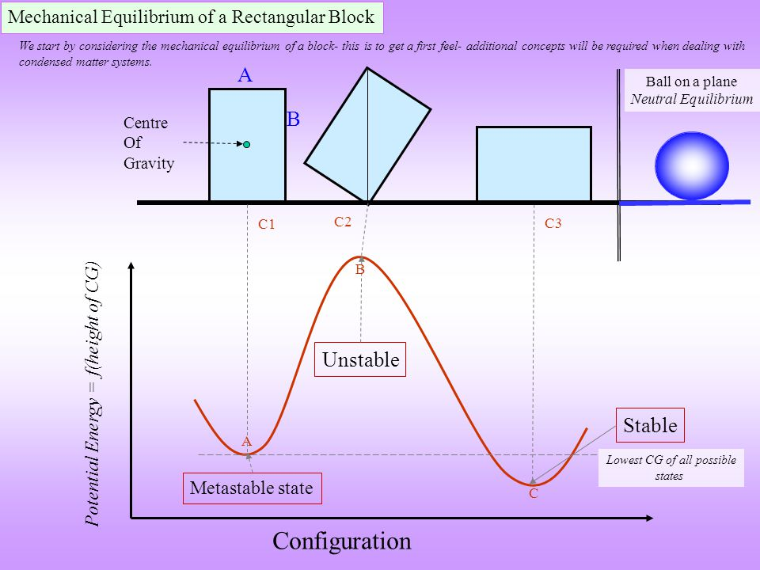
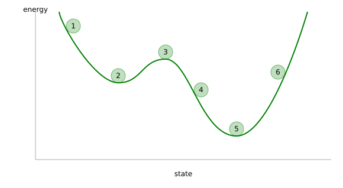
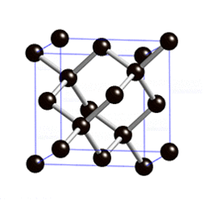
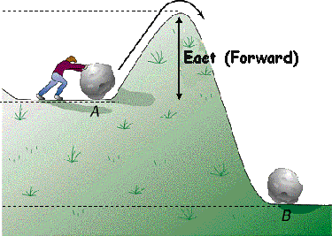

class: center, middle # Introduction to Materials Informatics --- # Class goals - Give a survey of materials science, machine learning, and (very basic) Python coding - Provide **intuition** to help understand advanced concepts --- # Agenda 1. Introductions 2. Materials science 3. Informatics and machine learning 4. Coding and plotting materials science data --- # Class format - Lots of **interactive discussion and questions** - Some very basic coding and making plots at the end - Ask questions at any time (but please raise your hand) - If you need to briefly leave for any reason (e.g. water / snack / bathroom / phone call), feel free to do so without asking and feel free to come back in (don't worry about interrupting) --- # Introduction - A little about me - Round-table student intros (name? grade? favorite subject?) --- # What is Materials Science? Some examples... <img src="img/stm.jpg" width="600"> --- # What is Materials Science? Some examples... <img src="img/graphene.jpg" width="600"> --- # What is Materials Science? Some examples... <img src="img/graphene-desalination.jpg" width="600"> --- # What is Materials Science? Some examples... <img src="img/lotus.jpg" width="600"> --- # What is Materials Science? <img src="img/matsci.png" width="600"> --- # What is Materials Science? <img src="img/doe_scales.jpg" width="600"> --- # What are some core concepts of Materials Science? - Can anyone think of core concepts for more familiar fields, like **physics / biology / chemistry**? - How would you answer the question, "what is physics?" (or biology, or chemistry) ??? [ Give examples like F=ma, biological cells, periodic table of elements ] --- # Crystal structures - What is a crystal? Can anyone give examples? <img src="img/crystal.png" width="300"> ??? [Show picture of crystal lattice and/or unit cell] [Useful because it lets us DESCRIBE MATERIALS] --- # DISCUSSION: Which ones are crystals? - Which of these are crystals? Which aren't? Why? See if you can convince your neighbor.  <img src="img/mat_02.jpg" width="300"> ??? [ Show a few images, macro/micro/atomic scale ] --- # Bravais lattices  --- # Is this a Bravais lattice? <img src="img/graphene2.png" width="350"> --- # We need to consider the **basis**  --- # Thermodynamic stability  ??? [Show pictures of something like lego blocks or whatever. What is stable? What is unstable? Why?] [Show idea of energy landscapes. What is stable? Unstable? Why?] [Explain metastable and unstable] [Useful because it tells us WHAT TO EXPECT FROM A MATERIAL] --- # DISCUSSION: Which ones are stable / metastable / unstable? - Which of these are stable? Metastable? Unstable? Why? See if you can convince your neighbor.  ??? [ Show a few images, both materials and non-materials examples ] --- # DISCUSSION: Diamond stability? - Are diamonds stable? Metastable? Unstable? Why? <img src="img/diamond.png" width="300">  ??? - They're metastable, but why don't we see them decomposing? See if anyone can guess KINETICS / REACTION RATES --- # Kinetic barriers  ??? [ Use something like analogy of going from point A to point B but there's a hill in the way ] [ Shift analogy to energy landscape -- which point should be lower? What does the hill represent? ] [Useful because it tells us HOW/WHY MATERIALS CHANGE (ESPECIALLY SPEED/RATE)] --- # DISCUSSION: Fast and slow kinetics - How can you speed up a reaction? Why? See if you can convince your neighbor. ??? [ Temperatures, catalysts, concentrations, surface area, ... ] --- # Material properties At the end of the day, we often care about what **properties** materials have. One general example is mechanical strength (e.g., doesn't break easily if you pull on it). - Can you think of other examples of useful properties? What kinds of materials might have these properties? --- # DISCUSSION: Thinking about properties - What **properties** do you think this material has? <img src="img/aerogel.jpg" width="300"> --- # Recap of materials science - We want to link between size scales [Why?] - Thermodynamic stability tells us... [???] - Kinetics tells us about... [???] <img src="img/matsci.png" width="400"> --- # Informatics - what is it? - Let's contrast with 'first principles' reasoning: Which is heavier? A block of iron or a block of styrofoam (of same sizes)? Why? --- # What about a data-first approach? - Imagine you have some metal blocks and some wooden blocks, and you've never heard of 'density' or 'atoms'. Could you come up with 'rules' to describe which blocks should be heavier? <img src="img/wood_block.jpg" width="300"> <img src="img/metal_block.jpg" width="300"> --- # Data-first isn't always so silly - If I throw a ball in an arc, how do I figure out where it lands? <img src="img/basketball.png" width="500"> --- # Data-first isn't always so silly - If I throw a ball in an arc, how do I figure out where it lands? <img src="img/projectile_motion.png" width="500"> --- # DISCUSSION: Finding patterns in the data X1 = `[ 01, 02, 03, 04, 05 ]` Y1 = `[ 01, 04, ??, 16, 25 ]` *** X2 = `[ 01, 02, 03, 04, 05, 06, 07 ]` Y2 = `[ 01, 01, 02, 03, 05, 08, ?? ]` *** X3 = `[ 04, 05, 07, 03, 24, 12, 35, 18 ]` Y3 = `[ 01, 00, 00, 00, 01, 01, 00, ?? ]` --- # We want to find **models** from our data - What is the line here? What determines where it should be drawn? - If the temperature rises to 30C, how much money will you make? <img src="img/icecream.gif" width="500"> ??? [Show diagram of 'best fit lines' and other easy examples] [Qualitatively explain the idea of error and fit, prediction and generalization] --- #DISCUSSION: But models aren't always so easy to find... <img src="img/fitting.png" width="600"> --- # "Machine learning" and "artificial intelligence" - Hot topics these days: but what are these fields about? - Lots of things, but one major theme is learning **models from the data** --- # Unsupervised learning <img src="img/unsup.png" width="600"> --- # Supervised learning <img src="img/sup.png" width="600"> --- # Semi-supervised learning <img src="img/semisup1.png" width="600"> --- # Semi-supervised learning <img src="img/semisup2.png" width="600"> --- # A cool machine learning example <iframe width="560" height="315" src="https://www.youtube.com/embed/V1eYniJ0Rnk" frameborder="0" allowfullscreen></iframe> --- # A cool machine learning example <iframe width="560" height="315" src="https://www.youtube.com/embed/qv6UVOQ0F44" frameborder="0" allowfullscreen></iframe> --- # Intro to Python - Popular general-purpose programming language in the sciences (and other fields too) ```python #A function ACCEPTS ARGUMENTS and gives you BACK A VALUE def add_numbers(a, b): sum = a + b return sum #Most programs use CONDITIONAL LOGIC if add_numbers(1, 2) > 6: print ( "The number was bigger than 6" ) else: print ( "The number wasn't bigger than 6" ) ``` --- # Intro to Python ```python #You can IMPORT additional FUNCTIONS that other people have created from weather_functions import is_rainy_outside from outdoors_functions import is_sprinkler_on #And you can build your own functions using the IMPORTED FUNCTIONS def should_bring_umbrella(): return bool( is_rainy_outside() or is_sprinkler_on() ) if should_bring_umbrella(): bring_umbrella = True ``` --- #Plotting is really simple ```python #This is a 'pretend' example, but the real thing is very close to this from plot_functions import plot_scatter from dataset import plot_data plot_scatter(plot_data['x'], plot_data['y']) ``` --- # Materials informatics: the datasets - Periodic Table of Elements: - https://raw.githubusercontent.com/Bowserinator/Periodic-Table-JSON/master/PeriodicTableJSON.json <img src="img/periodic_table_large.png" width="600"> --- # Plotting the data and looking for patterns - We will use https://studio.azureml.net/ as our Python environment ```python #Import libraries for data loading and plotting (and assign shorthand names to the libraries) import pandas as pd import matplotlib.pyplot as plt #Read data and change rows/columns dataframe = pd.read_json("https://raw.githubusercontent.com/Bowserinator/Periodic-Table-JSON/master/PeriodicTableJSON.json") dataframe = dataframe.transpose() #Print out column names print ( dataframe.keys() ) ``` *** ```python #Set up plot and control view limits dataframe.plot("atomic_mass", "density", kind="scatter") plt.xlim(0, 300) plt.ylim(0, 40) ``` --- # Real research-based materials informatics example - http://www.mrl.ucsb.edu:8080/datamine/thermoelectric.jsp - Try playing around with the different plots --- # Some background info - **Thermoelectrics**: Materials where temperature differences produce electric currents (or vice versa) - **ZT**: Describes "how good" a material is at producing thermoelectric effect - **HHI**: Describes market share (higher = more monopolistic) --- # Thanks for listening! Any last questions? - You can get access the slides at these links if you ever want to revisit the lecture material: (Raw content) https://github.com/eddotman/intro-to-materials-informatics *** (Online slide viewer) http://htmlpreview.github.io/?https://raw.githubusercontent.com/eddotman/intro-to-materials-informatics/master/slides.html </menu>